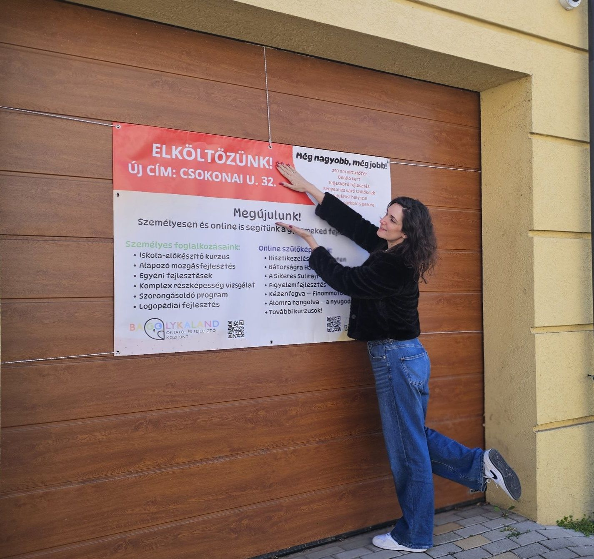

🏡 Bejelentés
Költözik a BagolykaLand! Új cím, még több lehetőség!
Ahhoz, hogy a gyerekeknek a legjobbat nyújthassuk, egy tágasabb és önálló ingatlanba költözünk! A márkát, a bevált foglalkozásokat és a csodás közösségünket visszük magunkkal. ❤️
📐 250 m² – önálló ingatlan, 2,5× nagyobb
🛋️ Tágas szülői váró – kényelmes várakozás
✨ Még több fejlesztési forma az új helyszínen
🦉 Ugyanaz a szeretett csapat és módszer
⏰ 2026. május 1-től érvényes
📍 Csokonai utca 32., Debrecen
Az Eötvös utcai helyszín április végén bezár